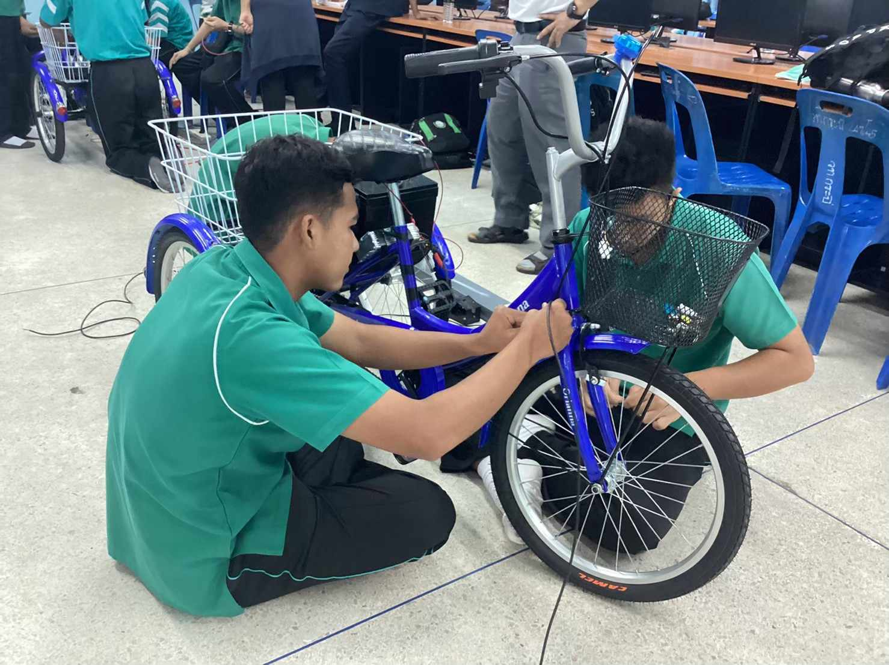
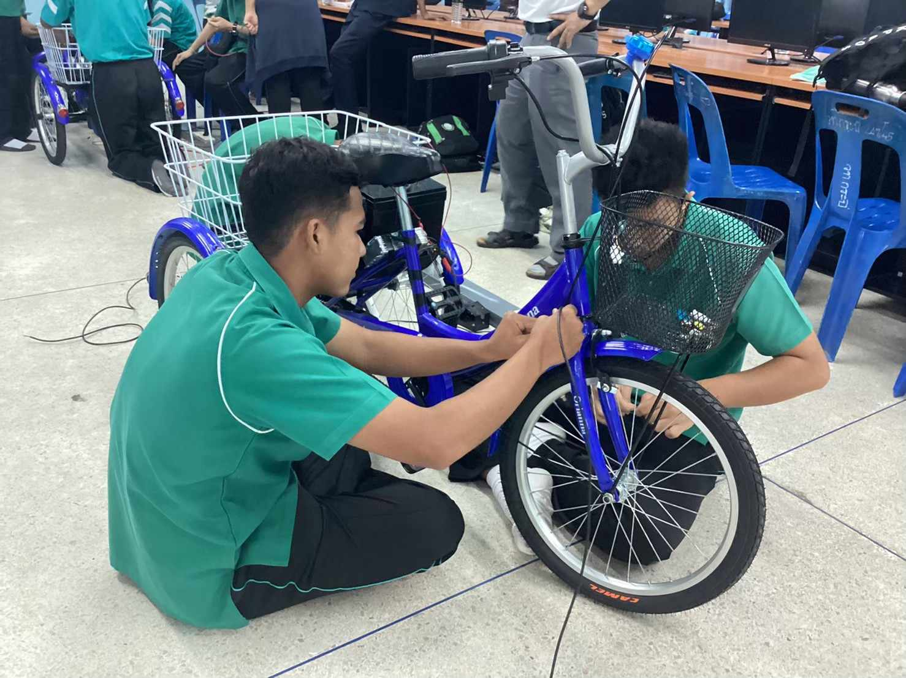

What I used to do???

POSN Physics
In participating in this camp, I gained both knowledge and enjoyment, along with experiencing a new social learning environment. During the camp, I had the opportunity to learn and engage in physics workshops and labs. It was my first time participating in such activities, and I gained a lot from the experience. I thoroughly enjoyed and appreciated this camp's activities.
the 5th international STEM contest 2022(the 5th ISSC)
It's great that participating in the event, including training exercises and collaborative teamwork, has provided you with valuable knowledge and strengthened your team's ability to work together systematically. Training and experimenting as a team are excellent ways to learn and enhance teamwork skills.

Open house of KPAOS
I be assigned the task of managing the physics lab during the Open House event. In that event there are student in my school and other school come to join us. It have a lot of physics equipment the I don't know and I have chance to try it.


INTERN
I participated in an internship organized by the school, and I chose to intern in the field of engineering. The school arranged for me to intern in the civil engineering department, where I had the opportunity to work at the Provincial Administration Organization of Krabi. I observed the entire process of material production, design, and on-site work. It was indeed a valuable experience for me.
 

ICT
I have to join this event for 2 times. In the first time I do the automatic Irrigation System that use wifi link to phone and order to watering. In second time I do electric bycycle. This time is so fun, I learn how to soldering. How to electrical wiring. It so fun!!!


KMUTT
I visited King Mongkut's University of Technology Thonburi to attend the Open House event and participate in the Engineering Quest competition. It was an experience that provided not only knowledge and enjoyment but also various inspirations. I had a great time and found it very enjoyable.
King Jan Game(Sport Day)
Color sports events are another memorable activity where everyone can contribute their ideas and abilities to work together. I played a role in organizing scenes, procuring items and equipment. Additionally, I took responsibility for overseeing the color basketball sport. In the color basketball competition, we secured the 2nd position.

Yellow krabi sport game
I participated in the Yellow Krabi Volleyball Tournament held in 2022. My team and I underwent training and were awarded the second runner-up prize in the competition. It was a highly enjoyable experience playing the sport I love with my friends.

Loy Kratong Festival
Being a Thai musician and have chance leading the Glong Yao procession in the Loy Kratong festival must be an exciting and enjoyable. Glong Yao created vibrant and colorful vibes during the procession adds a memorable touch to the event.

Thai musical
I've been a part of a Thai music group at my school since my first year of high school. I play the fiddle and have been practicing Thai music throughout this time. I've also had the opportunity to perform at various events. From the image it is teacher's day that i have to play fiddle to be background music in event.

student mentor
It is my 1st student mentor after Covid-19. It so fun to play with my junior generation.

Pee sorn nong
This is one of event that I have to teach elementary student. It is one of volunteer project.

Volunteer project
I go to collect the garbage at Poo Dum muangkrabi / Pranurach temple (krabi) / Tara park (krabi) / Panichanrathananukul temple (krabi)